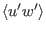
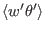
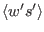

Next: Introduction Up: html Previous: Convective adjustment (Source File: Contents
To close the differential equations for momentum, heat, and salt,
parameterisations of the turbulent fluxes of momentum,
, heat
, and salinity
 are required. Since
turbulence `feels' the effects of temperature and salinity
fluctuations essentially through buoyancy fluctuations, only the
buoyancy flux,
 , is discussed in the following. The
assumptions under which one can infer the fluxes of heat and salinity
from the buoyancy flux are addressed below.
, is discussed in the following. The
assumptions under which one can infer the fluxes of heat and salinity
from the buoyancy flux are addressed below.